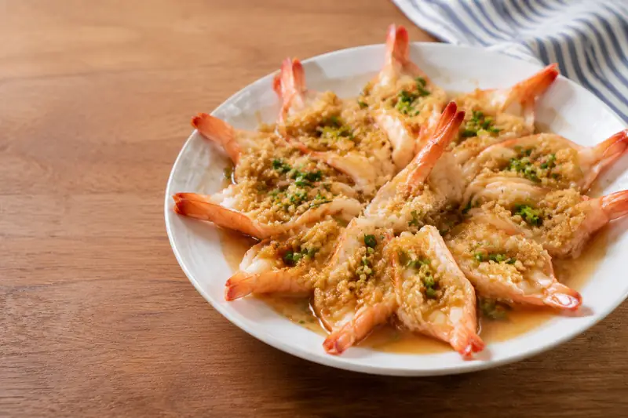

Main主菜 · Cantonese粤
Steamed Garlic Butterflied Shrimp蒜蓉开背虾
Butterflying the shrimp looks impressive and lets the garlic sauce seep right in. The mix of raw and fried garlic gives layers of flavor, fresher than all-fried and gentler than all-raw. The main thing to watch is the steaming time.开背虾既好看又入味：把虾背剪开、去虾线，蒜蓉汁能直接渗进肉里。用金银蒜（一半生蒜、一半炸过的蒜）蒸，蒜香分层，比单用生蒜不冲，又比全炸蒜更鲜。

Ingredients食材
- Frozen raw shrimp冷冻生虾 400 g · about 12 large shell-on shrimp带壳大虾约 12 只 pick ones with intact shells and a firm curl选壳完整、虾身弯曲有弹性的
- Garlic大蒜 40 g · about 8 cloves, minced fine约 8 瓣，切成细末
- Shaoxing wine料酒(绍兴) 15 g · 1 tbsp, for the shrimp1 汤匙，腌虾用
- Salt盐 2 g · about 1/3 tsp约 1/3 茶匙
- Soy sauce生抽 12 g · 2 tsp2 茶匙
- Sugar白糖 2 g · 1/2 tsp半茶匙
- Canola oil菜籽油 28 g · 2 tbsp (30 mL)2 汤匙（30 mL）
- Green onions大葱/小葱 15 g · 1 stalk, chopped1 根，切葱花
- Sesame oil香油(芝麻油) 3 g · 1/2 tsp半茶匙
- Black pepper黑胡椒 0.5 g · a pinch少许
Weights are as bought, before trimming or peeling. Costco pack sizes and availability vary; see each ingredient page.重量为买回来的原重（去皮去骨之前）。Costco 规格与有无随时变化，点食材名看详情。
Method做法
- With kitchen scissors cut along the back of each shrimp from head to tail through the shell and into the flesh, but not through the belly.用厨房剪刀沿虾背从头到尾剪开虾壳，不要剪断虾肉。
- Lift out the dark vein with a knife tip and flatten the shrimp open.用刀尖挑出虾线，把虾肉摊开压平。
- Rinse the shrimp and pat them dry.虾冲净，用厨房纸吸干水。
- Toss the shrimp with the wine, salt and pepper and marinate for 10 minutes.虾加料酒、盐和黑胡椒拌匀，腌 10 分钟。
- Divide the garlic into two equal portions: one stays raw in a bowl, the other is for frying.蒜蓉分成两份，一份放碗里，另一份准备下锅炸。
- Heat the 2 tbsp oil in a small pan over low heat and fry half the garlic for about 1 minute until just pale gold.小锅放 2 汤匙油，小火下一半蒜蓉，炸到刚发黄，约 1 分钟。
- Pour the hot garlic and oil over the raw garlic, add the soy sauce and sugar and stir. This is the gold-and-silver garlic.趁热倒进生蒜碗里，加生抽和糖拌匀，这就是金银蒜。
- Arrange the shrimp cut-side up on a plate and spoon the garlic evenly on each.虾肉朝上摆进盘子，把蒜蓉均匀铺在每只虾上。
- With the steamer at a full boil, add the plate, cover and steam on high for 4 minutes.水烧到大滚，放入盘子，盖盖大火蒸 4 分钟。
- Turn off the heat when the shrimp are curled, pink and opaque.虾身卷曲、变成粉红色、肉不再透明就关火。
- Scatter the scallion, drizzle on the sesame oil and serve hot.撒葱花，淋上芝麻油，趁热上桌。
Keys to success成功要点
- Leave the belly shell attached so the shrimp stay open like a book; steaming in the shell also keeps them juicy.剪开不要剪到底，保留腹部相连，虾才能「开花」；连壳蒸也更能锁住汁水。
- Fried garlic gives toasty depth and raw garlic keeps the bite; together they taste more layered than either alone.金银蒜：炸过的蒜带来焦香，生蒜保留辛香，两者混合层次比单一做法丰富。
- Four minutes is enough and overcooking is the big risk. Use 5 minutes for jumbo shrimp and 3 for small.虾蒸 4 分钟就够，时间是这道菜最大的风险。大虾可延长到 5 分钟，小虾 3 分钟。
Common problems常见失败与补救
- The shrimp are tough and rubbery虾肉发硬、像橡皮
They were overcooked. Stop when the shrimp curl into a C and turn pink; a tight O means they are already past it.蒸过头了。看到虾卷成大写字母 C、颜色粉红就关火；O 形说明已经老了。 - The garlic tastes bitter蒜蓉发苦
The oil was too hot or the garlic fried too long. Keep the heat low and pull the pan the moment it turns pale gold; if it browned, start over.炸蒜油太热或时间太久。小火，蒜刚变浅黄就离火；已经发褐的就倒掉重来，不要硬用。 - The plate is watery and bland盘子里出了很多水，味道淡
The shrimp were wet or the plate was not level. Dry them before marinating, and pour off half the liquid after steaming and add a little soy sauce.虾没擦干，或蒸盘不是平的。腌之前一定吸干；蒸好后把盘里汤汁倒掉一半，再补一小勺生抽。
Watch it done视频参考
Titled as steamed garlic prawns with vermicelli, about two and a half minutes; the cutting and garlic topping are the same technique.标题是蒜蓉粉丝蒸大虾，约 2 分半钟，对开背、铺蒜蓉的手法有直接的演示。
The title says it includes how to prepare the shrimp, about seven minutes and nearly 1.9 million views.标题注明附上虾子前处理方式，约 7 分钟，近 190 万次观看。
Videos load only when you tap them (youtube-nocookie). Creators are credited; we do not host their videos.点了才加载视频（youtube-nocookie）。署名原作者，本站不托管视频。
Nutrition营养
| Energy热量 | 313 kcal |
| Protein蛋白质 | 27.9 g |
| Fat脂肪 | 17.6 g |
| of which saturated其中饱和脂肪 | 1.8 g |
| Carbohydrate碳水化合物 | 10 g |
| Fibre膳食纤维 | 0.7 g |
| Sodium钠 | 1855 mg |
High sodium钠偏高 Sodium tiers: under 345 mg lower, 345-689 mg moderate, 690 mg and above high (this site's tiers; 15% of the 2,300 mg daily reference = 345 mg).钠分档：低于 345 mg 较低，345–689 mg 中等，690 mg 及以上偏高（本站分档；345 mg ＝ 每日参考 2300 mg 的 15%）。
Computed from the Canadian Nutrient File (Health Canada) with the weights above; oil and sauces are counted in full. Real dishes differ.按加拿大营养素数据库和上面的重量计算；油和酱汁按全量计入，实际会略低。
Good to know适合 / 需注意
- About 27.9 g protein per serving, a protein-rich meal (adult reference intake roughly 50-60 g/day; needs vary).每份蛋白质约 27.9 g，属于蛋白质较高的一餐（成人每日参考量约 50–60 g，个体差异大）。
- About 313 kcal with 27.9 g protein per serving; a reference when you watch total energy.每份约 313 千卡且蛋白质 27.9 g，需要控制总热量时可作参考。
- About 1855 mg sodium per serving (about 81% of the 2,300 mg daily reference), on the high side; use less soy sauce or salt, and pair with unsalted sides.每份钠约 1855 mg（约占每日参考 2300 mg 的 81%），偏高；少放酱油或盐，或搭配无盐主食与蔬菜。
- Contains allergens: Crustaceans, Sesame, Soy, Wheat / gluten.含过敏原：甲壳类、芝麻、大豆、小麦/麸质。
Shrimp are lean and high in protein, and steaming adds little fat. They are fairly high in cholesterol, so reduce the portion if you watch that.虾的脂肪少、蛋白质高，蒸的做法几乎不增加油脂；虾本身胆固醇含量较高，需要注意的人可以减少份量。